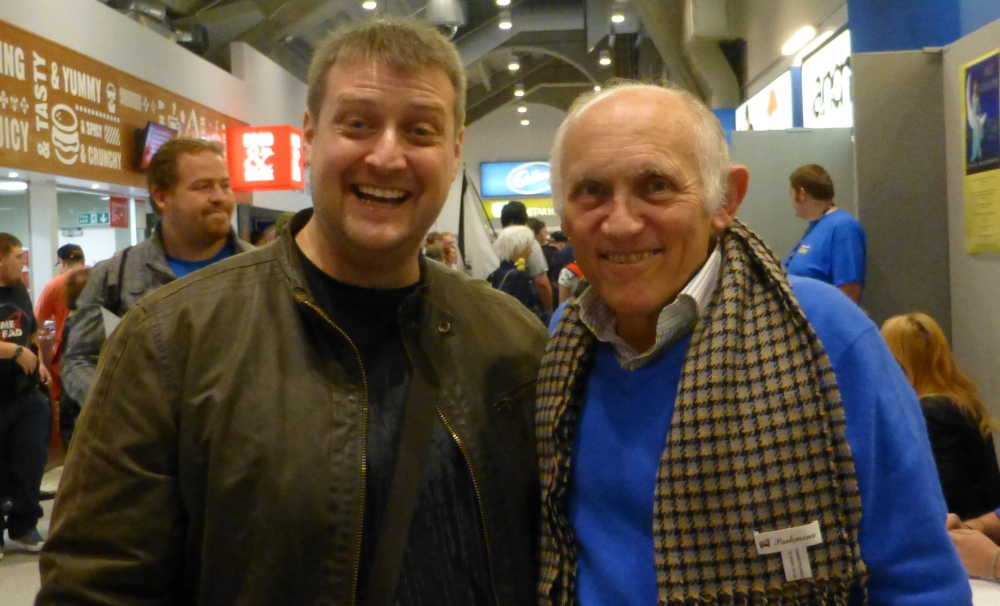

Meeting The Ferengi
Published on: June 3, 2015
Star Trek has long been on of my geek passions and it was something that I shared with my mother from the beginnings of Star Trek The Next Generation. Of all the Star Trek series, I enjoyed Deep Space Nine the most as I felt that it brought a little more humanity to the series. However of all the characters in the series, it was the Ferengi family that I liked the most. So when I went to the Sheffield Film and Comic Convention in August 2014 and got to meet Armin Shimerman, I had perhaps the best geek day ever, as you can see from my idiotic smile:
I spent a lot of time talking to Armin that day and listening to his stories about his experiences on and off set of Deep Space Nine. The following is a summary of the stories he told.
Armin first appeared as a Ferengi in the fifth episode of Star Trek The Next Generation. It was the first appearance of the Ferengi in any series and as a race they hadn't yet been fleshed out. The episode itself was pretty bad, Armin himself was not happy with his performance as an actor and the script itself was pretty dire and made the Ferengi out to be clowns at best. Wil Wheaton's comedic recollection of the episode are quite apt:
When Picard extends this invitation to the Ferengi, we learn that they are:
- Not that tough.
- Not that scary.
- All about the Benjamins
- Probably the lamest, most incompetent enemy ever introduced in the history of television. Seriously. Even worse than the Army in The A-Team.
...
Holy shit! The evil Ferengi are finally here, in person! We can see more than just their moderately scary faces and they are... uh... short. And bouncy. And they wave their hands over their heads a lot. And they don't like loud noises. And they carry whips... and wear Ugg boots.
From: Memories of the Future (Volume 1), Wil Wheaton
When Armin was cast as Quark in Deep Space Nine, he made it his mission to make up for everything that was bad about the Ferengi in The Last Outpost. He wanted the Ferengi to taken seriously as a species in Star Trek and felt that he owed this to the fans of the show. In this I feel that Armin not only succeeded, but excelled.
I told Armin that I felt the Ferengi family in Deep Space Nine always felt like a proper family and I asked him if this was reflected off camera. Armin told me that it was. As part of his mission to portray the Ferengi as best as he could, the actors in and surrounding the Ferengi Family did something almost unheard of in acting circles. They rehearsed not just in their work time, but also in their free time. They would gather at Armin's house every weekend to practice their lines and performances for the upcoming episodes. It was through this in which the actor's built up their relationships and the chemistry between their char.
During the early episodes of The Next Generation, Patrick Stewart lived out of his suitcase, I asked Armin if he had been in a similar position. Armin told me that going into Deep Space Nine, he was confident and determined that the show would go the distance. He also went on to say that Patrick Stewart even stayed with him for a short period of time during the early recordings of The Next Generation.
In a small piece of trivia, Armin told me that his wife (Kitty Swank, who was with him that day) was one of the only actor's wives to make it into the cast of the same Star Trek show. No-one elses partner was ever able to break that wall.
The first version of this article was written in August 2015, however this was lost when decommissioning my old web server so much of this I have had to reconstruct from memory. I will expand on this as and when I recall something new.